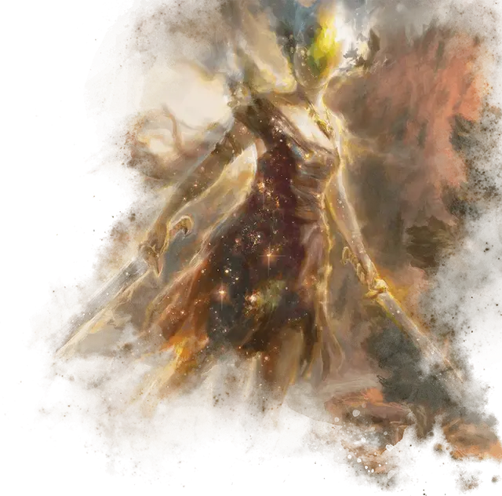

Эйдолон призрачных клинков
Ghostblade Eidolon
Средняя Нежить, без мировоззрения

Класс Доспеха 12
Хиты 55 (10к8 + 10)
Скорость 30 футов
| мод | спас | ||
|---|---|---|---|
| СИЛ | 16 | +3 | +3 |
| ЛОВ | 15 | +2 | +2 |
| ТЕЛ | 12 | +1 | +1 |
| мод | спас | ||
|---|---|---|---|
| ИНТ | 13 | +1 | +1 |
| МДР | 12 | +1 | +1 |
| ХАР | 14 | +2 | +2 |
Навыки Акробатика +5, Атлетика +6, Восприятие +4
Сопротивление урону некротическая энергия; дробящий, колющий, рубящий от немагических атак
Иммунитет к урону яд
Иммунитет к состояниям захват, испуг, истощение, окаменение, опутанность, отравление, очарование, паралич
Чувства пассивное Восприятие 14
Языки все, известные при жизни
Опасность 5 (1800 опыта)
Бонус мастерства +3
Особенности
Размытая форма. Броски атаки против эйдолона совершаются с помехой, до тех пор, пока эйдолон дееспособен.
Бестелесное перемещение. Эйдолон может передвигаться сквозь других существ и объекты, как если бы они были труднопроходимой местностью. Он получает 5 (1к10) урона силовым полем, если оканчивает свой ход внутри объекта.
Сопротивление изгнанию. Эйдолон обладает преимуществом на спасброски против эффектов, изгоняющих нежить.
Действия
Мультиатака. Эйдолон совершает две атаки Призрачным клинком.
Призрачный клинок. Рукопашная атака оружием: +6 к попаданию, досягаемость 5 футов, одна цель. Попадание: 8 (1к8 + 3) рубящего урона плюс 11 (2к10) урона силовым полем.
Описание
Когда смертная душа повреждается, жертвует своей личностью, чтобы сбежать из Подземного царства в качестве Возвращённого; её личность проявляется как призракоподобный эйдолон. В то время как призраки обладают многими навыками и деталями, связанными с их прошлыми жизнями, эйдолоны оторваны от этого опыта, предпочитая бродить по миру или размышлять в местах, куда их влечет смерть. Их не волнует болезненное воссоединение со своими потерянными телами или Возвращёнными телами.
Из различных типов эйдолонов эйдолоны летящего шага являются наиболее распространенными и блуждают без цели. Эйдолоны призрачных клинков обычно возникают из павших воинов и верят, что они бесконечно участвуют в великих битвах.
Природа нежити. Эйдолон не нуждается в воздухе, еде, питье или сне.